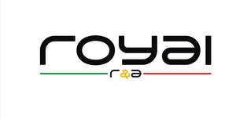

Trade Mark Journal No.2026/003 16 January 2026
UK00004284645 27 October 2025 (3,11,20,25)

- Class 3
- Hair powder; hair shampoo; shampoos; hair dyes; hair sprays; hair moisturizers; hair cosmetics; hair bleach; hair creams; hair rinses; hair colorants; hair styling gels; hair liquids; hair neutralizers; hair gels; hair mascara; hair pomades; hair serums; cosmetic hair lotions; hair tonics; hair lighteners; hair lacquers; hair emollients; hair styling spray; hair lotion; hair conditioner; hair mousse; hair glazes; hair balms; hair relaxers; hair fixers; hair balsam; hair chalks; hair styling waxes; hair wax; hair removing cream; hair moisturising conditioners; hair oils; hair frosts; hair colour removers; hair styling lotions; shampoo; after-shave; aftershave; cologne; moisturizers; soaps; aftershave lotions; cosmetics; perfumes; after shave lotions; antiperspirants; shaving creams; aftershave preparations; perfumery; makeup; aftershave creams; fragrances; shaving preparations; aftershave balms; aftershave gels; shaving sets, comprised of shaving cream and aftershave; aftershave milk; aftershave emulsions; hair shampoos; shaving gel; shaving foams; shaving lotions; shower gel; shaving lotion; hair gel; perfume; bath gel; shaving balm; pre-shave gels; after-shave gel; shaving soaps; body mist; skin care preparations; skincare preparations; moisturiser; body lotion; non-medicated skincare preparations; body scrub; non-medicated skin care preparations.
- Class 11
- Hair driers; hair drying appliances; electrical hair driers; stationary hair dryers; travel hair dryers; electric hair dryers; towel steamers for hair salons; hair drying machines for beauty salon use; hair dryers; hair drying apparatus; appliances for drying hair; apparatus for drying hair; hand held hair dryers; hair steamers for beauty salon use; fans for hair drying.
- Class 20
- Mirrors; mirror tiles; furniture; tables; cabinets; picture frames; frames; mirror frames; racks; mirror stands; shelves; bathroom mirrors; decorative mirrors; drawers; locker mirrors; shaving mirrors; beds; chairs; wall mirrors; mirrored cabinets; cushions; pillows; cupboards; hand mirrors; photograph frames; window blinds; picture frame brackets; desks; dressing tables; picture frame moldings; bathroom furniture; hand-held mirrors; toilet mirrors being hand-held mirrors; printed mirrors; three-mirror dressing tables; personal compact mirrors; frames for mirrors; cupboards fitted with mirrors; non-metal mirror hangers; hand-held mirrors [toilet mirrors] .
- Class 25
- Neckbands.
ADEL AZIZ
Representative: Trademark Planet Limited